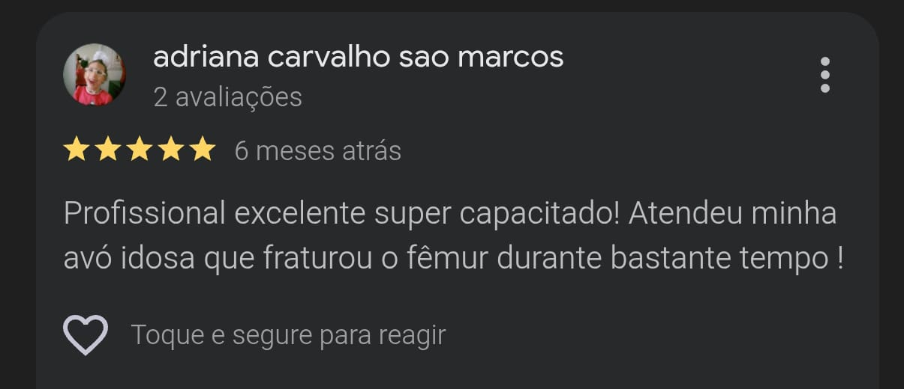

Fisioterapia domiciliar especializada para idosos em recuperação após cirurgias, internações ou perda de autonomia.
Solicitar Avaliação EspecializadaSou fisioterapeuta com mais de 18 anos de experiência hospitalar, atuando em UTI e reabilitação de pacientes graves.
Levo essa experiência e segurança para dentro da casa dos meus pacientes, com um processo seguro e individualizado.
Confira o que dizem os pacientes e famílias que já confiam no trabalho do Victor Hugo.

⬅ Deslize para ver os vídeos de atendimento ➡
Acompanhamento estruturado em plano mensal para garantir evolução.